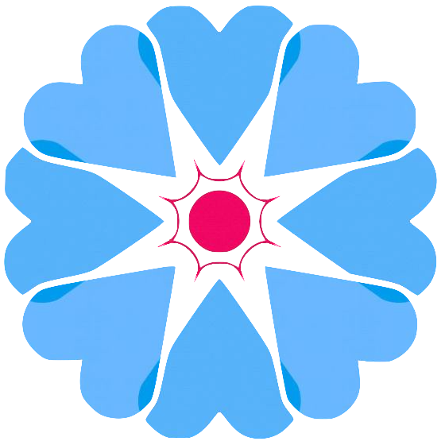

<!--
  Generated template for the AccountPage page.

  See http://ionicframework.com/docs/components/#navigation for more info on
  Ionic pages and navigation.
-->
<ion-header>

  <ion-navbar>
    <ion-row>
      <ion-col left text-left>
        <button ion-button icon-only clear>
          <ion-icon name="menu"></ion-icon>
        </button>
      </ion-col>
      <ion-col center text-center>
        
      </ion-col>
      <ion-col right text-right>
        <button ion-button icon-only clear (click)="more($event)">
          <ion-icon name="more"></ion-icon>
        </button>
      </ion-col>
    </ion-row>
  </ion-navbar>

</ion-header>


<ion-content padding>

  <ion-list>
    <ion-list-header>
      Account Information
    </ion-list-header>

    <ion-item>
      <ion-icon name="person" item-start></ion-icon>
      <ion-label stacked>Name</ion-label>
      <ion-input [(ngModel)]="user.name" type="text"></ion-input>
    </ion-item>

    <ion-item>
      <ion-icon name="mail" item-start></ion-icon>
      <ion-label stacked>Email</ion-label>
      <ion-input [(ngModel)]="user.email" type="text"></ion-input>
    </ion-item>

    <ion-item>
      <ion-icon name="finger-print" item-start></ion-icon>
      <ion-label stacked>Username</ion-label>
      <ion-input [(ngModel)]="user.username" type="text"></ion-input>
    </ion-item>
  </ion-list>

  <br>
  <ion-list>
    <ion-list-header>
      Settings
    </ion-list-header>

    <ion-item>
      <ion-icon name="navigate" item-start></ion-icon>
      <ion-label stacked>Nearby</ion-label>
      <ion-select [(ngModel)]="user.millage">
        <ion-option value="5">5 miles</ion-option>
        <ion-option value="10">10 miles</ion-option>
        <ion-option value="15">15 miles</ion-option>
        <ion-option value="20">20 miles</ion-option>
        <ion-option value="25">25 miles</ion-option>
      </ion-select>
    </ion-item>

  </ion-list>

</ion-content>